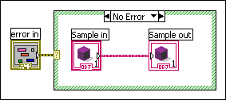
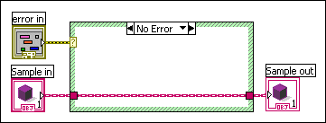

As shown in the following block diagram, this error occurs when you use a dynamic front panel control or indicator inside a structure. You cannot place dynamic front panel terminals inside structures because you must read from or write to dynamic terminals exactly once. Placing a terminal inside of a structure would cause LabVIEW to either access the terminal multiple times or skip it entirely. Without this restriction, LabVIEW cannot guarantee the run-time type safety of the block diagram. However, if a VI does not include any dynamic output terminals, you can place a dynamic input terminal inside of a structure and still guarantee run-time type safety of the block diagram.
To correct this error, move the dynamic front panel terminals outside of all structures as shown in the following block diagram.
